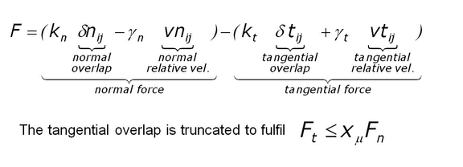
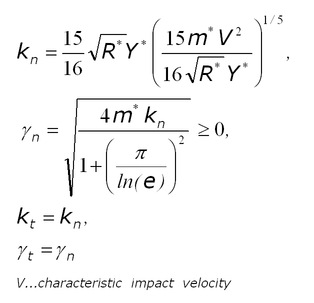
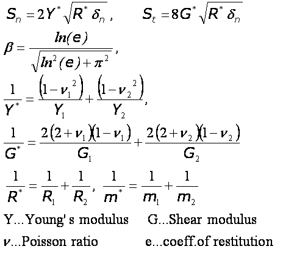

For Hooke, the Kn, Kt, gamma_n, and gamma_t coefficients are calculated as follows from the material properties:
LIGGGHTS WWW Site - LIGGGHTS Documentation - LIGGGHTS Commands
Syntax:
pair_style style dampflag cohesionflag
style = gran/hooke or gran/hooke/history or gran/hertz/history
dampflag = 0 or 1 if tangential damping force is excluded or included
cohesionflag = 0 or 1 if macroscopic cohesion is excluded or included
Examples:
pair_style gran/hooke/history 1 0 pair_style gran/hooke 1 1
LIGGGHTS vs. LAMMPS Info:
This LIGGGHTS command offers the following improvements vs. LAMMPS: The stiffness and damping coefficients k_n, k_t, gamma_n, gamma_t are now derived from the material properties. Also, a new model for macroscopic cohesion is introduced.
Description:
The gran styles use the following formula for the frictional force between two granular particles, when the distance r between two particles of radii Ri and Rj is less than their contact distance d = Ri + Rj. There is no force between the particles when r > d:

In
the first term is the normal force between the two particles and the
second term is the tangential force. The normal force has 2 terms, a
contact force and a damping force. The tangential force also has 2
terms: a shear force and a damping force. The shear force is a
"history" effect that accounts for the tangential
displacement (“tangential overlap”) between the particles
for the duration of the time they are in contact. This term is
included in pair styles hooke/history and hertz/history,
but is not included in pair style hooke. The tangential
damping force term is included in all three pair styles if dampflag
is set to 1; it is not included if dampflag is set to 0.
The other quantities in the equations are as follows:
delta_n = d - r = overlap distance of 2 particles
k_n = elastic constant for normal contact
k_t = elastic constant for tangential contact
gamma_n = viscoelastic damping constant for normal contact
gamma_t = viscoelastic damping constant for tangential contact
delta_t = tangential displacement vector between 2 spherical particles which is truncated to satisfy a frictional yield criterion
v_n = normal component of the relative velocity of the 2 particles
v_t = tangential component of the relative velocity of the 2 particles
For Hertz, the Kn, Kt, gamma_n, and gamma_t coefficients are calculated as follows from the material properties:
For
Hooke, the Kn, Kt, gamma_n, and gamma_t coefficients are calculated
as follows from the material properties:

In
general, the following definitions apply to two particles in contact:

To define those material properties, it is mandatory to use multiple fixes of type global/property to define them (see doc for fix_property for details):
fix id all property/global youngsModulus peratomtype value_1 value_2 ...
(value_i=value for Youngs Modulus of atom type i)
fix id all property/global poissonsRatio peratomtype value_1 value_2 ...
(value_i=value for Poisson ratio of atom type i)
fix id all property/global coefficientRestitution peratomtypepair n_atomtypes value_11 value_12 .. value_21 value_22 .. .
(value_ij=value for the coefficient of restitution between atom type i and j; n_atomtypes is the number of atom types you want to use in your simulation)
fix id all property/global coefficientFriction peratomtypepair n_atomtypes value_11 value_12 .. value_21 value_22 .. .
(value_ij=value for the (static) coefficient of friction between atom type i and j; n_atomtypes is the number of atom types you want to use in your simulation)
The "characteristic impact velocity" is only used for hooke styles:
fix id all property/global characteristicVelocity scalar value
(value=value for characteristic impact velocity)
IMPORTANT NOTE: You have to use atom styles beginning from 1, e.g. 1,2,3,... Right now, LIGGGHTS does not check for if the material properties are defines for each material (or each pair of material properties). If they are not defined properly, LIGGGHTS may crash.
The coefficient of friction cof is the upper limit of the tangential force through the Coulomb criterion Ft = cof *Fn, where Ft and Fn are the total tangential and normal force components in the formulas above. Thus in the Hookean case, the tangential force between 2 particles grows according to a tangential spring and dash-pot model until Ft/Fn = cof and is then held at Ft = Fn*cof until the particles lose contact. In the Hertzian case, a similar analogy holds, though the spring is no longer linear.
If cohesionflag = 1, the linear cohesion model is activated. If two particle are in contact, it adds an additional normal force tending to maintain the contact, which writes F = k A, where A is the particle contact area and k is the cohesion energy density in J/m³. If you are using the linear cohesion model, you must also define the cohesion energy density:
fix id all property/global cohesionEnergyDensity peratomtypepair value
(value=value for cohesion energy density (in Energy/Length^3 units))
IMPORTANT NOTE: The cohesion model has been derived for the Hertzian Style, it may note be appropriate for the Hookean styles.
For granular styles there are no additional coefficients to set for each pair of atom types via the pair_coeff command. All settings are global and are made via the pair_style command. However you must still use the pair_coeff for all pairs of granular atom types. For example the command
pair_coeff * *
should be used if all atoms in the simulation interact via a granular potential (i.e. one of the pair styles above is used). If a granular potential is used as a sub-style of pair_style hybrid, then specific atom types can be used in the pair_coeff command to determine which atoms interact via a granular potential.
Mixing, shift, table, tail correction, restart, rRESPA info:
The pair_modify mix, shift, table, and tail options are not relevant for granular pair styles.
These pair styles write their information to binary restart files, so a pair_style command does not need to be specified in an input script that reads a restart file.
IMPORTANT NOTE: The material properties are not written to restart files! Thus, if you restart a simulation, you have to re-define them (by using the fixes mentioned above).
These pair styles can only be used via the pair keyword of the run_style respa command. They do not support the inner, middle, outer keywords.
Restrictions: none
These pair styles require that atoms store torque and angular velocity (omega) as defined by the atom_style. They also require a per-particle radius is stored. The granular atom style does all of this.
This pair style requires you to use the communicate vel yes option so that velocites are stored by ghost atoms.
Only unit system that are self-consistent (si, cgs, lj) can be used with this pair style.
Related commands:
Default: none
(Brilliantov) Brilliantov, Spahn, Hertzsch, Poschel, Phys Rev E, 53, p 5382-5392 (1996).
(Silbert) Silbert, Ertas, Grest, Halsey, Levine, Plimpton, Phys Rev E, 64, p 051302 (2001).